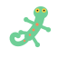

Turning the dials keeps the same seed, so you shape this melody. Roll the die for a new one.
Style
Bars
Shape
Phrase form
Register
Sound
Backing
Drums

Tom music machineTurning the dials keeps the same seed, so you shape this melody. Roll the die for a new one.
Snap blocks together: click a brick above (or drag it here), or hit ✨ Build a whole song.
Every song is brand new, written as you listen. On iPhone it keeps playing with the screen locked, and the lock screen shows the song with play, pause and next.
Tap a style to leave it out of (or add it back to) the Mix. The song playing finishes first.
Every song Radio plays shows up here, so you can play it again, save it, or take it into the composer. It's all kept on this device.
If Radio ever stops between songs, copy this and send it along: it shows what the player did and why. It stays on this device.